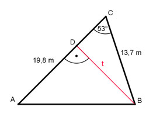

Aufgabe 80 Das Grundstück soll entlang der roten Linie unter 2 Anliegern aufgeteilt werden. Wie lang ist die Teilungslinie t, und wie groß ist die Fläche A des Grundstücks?

Im Dreieck BCD: h sin 53° = ---------- |*13,7 m 13,7 m t = 13,7 m * sin 53° = 13,7 m * 0,7986 = 10,9 m 19,8 m * t 19,8 m * 10,9 m A = ------------ = ----------------- = 107,9 m2 2 2